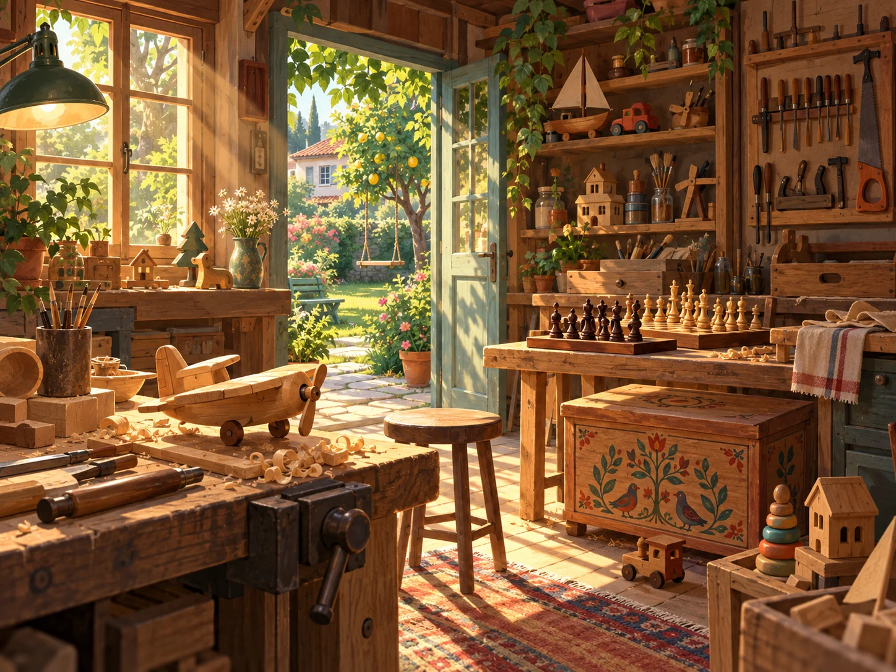

Görünen hayaller
Öykü ve Arda'nın düşünceleri hayal balonlarında canlanır. İzleyici, çocukların iç dünyasına doğrudan katılır.
RATEL DİJİTAL SUNAR
Küçük keşifler.
Kocaman bir aile.
Bir bahçe, bir marangoz atölyesi ve her günü yeni bir hikâyeye dönüştüren meraklı çocuklar.
01 / HİKÂYEMİZ
Kıymık Ailesi, gündelik hayatın küçük meselelerini hayal gücü, mizah ve dayanışmayla büyük keşiflere dönüştüren bir çizgi dizi.
Yedi yaşındaki Öykü, ağabeyi Arda, anne, baba ve marangoz dedeleri aynı evde yaşar. Bahçedeki atölye, ahşaba şekil verilen bir yer olduğu kadar fikirlerin, anıların ve aile bağlarının da yeşerdiği bir dünyadır.
Bazen kaybolan bir röportaj, bazen açılmayan bir sandık, bazen de ertelenen bir piknik… Her hikâyede çocukların merakı yeni bir kapı açar; çözümler birlikte bulunur.

KUŞAK, AYNI HİKÂYEDE.
Dedenin deneyimi, anne ve babanın desteği, çocukların hayal gücü. Her kuşak, ailenin dünyasına başka bir renk katıyor.
Üretmenin, onarmanın ve birlikte vakit geçirmenin sıcaklığı.
02 / BİZİM AİLE, BİZİM MAHALLE
Meraklısı, sabırsızı, şakacısı…
Hikâyeleri kişiliklerinden doğuyor.
Karakter görselleri, projenin atmosferini anlatan konsept çalışmalardır. Nihai karakter tasarımları değildir.
03 / İLK BÖLÜM
Öykü, yedinci doğum gününün unutulduğunu sanır. Oysa ailesi ve arkadaşları bahçede unutulmaz bir sürpriz hazırlamaktadır.
Diğer hikâyeleri keşfedinKahvaltıda beklediği kutlama gelmez. Öykü, hayal kırıklığını ayıcığıyla paylaşır.
Öykü dedesiyle pazardayken aile ve arkadaşlar bahçeyi bir partiye dönüştürür.
Bahçe kapısı açılır, herkes saklandığı yerden çıkar. Öykü'nün kırgınlığı sevince dönüşür.
Hediyelerin kimden geldiğini bilmeceler söyler. Öykü, son bilmeceyi izleyici çocuklara sorar.
SENARYODAN BİR BİLMECE
“Ahşaba şekil verir
Elinden her iş gelir
Kulağı az duysa da
Çok ama çok sevilir.”
Öykü'nün dedesi! Oyuncak sandığını da onun için kendi elleriyle yapmıştır.
04 / BÖLÜM DÜNYASI
İlk bölümün ardından geliştirilen
12 hikâyeyle dünyamız genişliyor.
Bu seçki, geliştirilen hikâye havuzunu gösterir. Sezonun kesin bölüm sayısı ve yayın sırası henüz belirlenmemiştir.
05 / ANLATIM DÜNYASI
Oyunla açılan, mizahla ilerleyen,
duygusuyla akılda kalan hikâyeler.
Öykü ve Arda'nın düşünceleri hayal balonlarında canlanır. İzleyici, çocukların iç dünyasına doğrudan katılır.
Arda'nın sakarlıkları, dedenin muzipliği ve çocukların sözcüklerle kurduğu oyunlar hikâyeye doğal bir neşe katar.
Bilmeceler, merak ve çözüm arayışı izleyiciyi hikâyeye yaklaştırır. İlk bölümün sonunda soru çocuklara uzanır.
ESKİŞEHİR'DEN İZLER
“Unutulan Şifre” hikâyesinde lüle taşı, Porsuk, Yazılıkaya ve Odunpazarı evleri bir aile hatırasının ipuçlarına dönüşür.
HİKÂYELERİN BİZE BIRAKTIKLARI
İş birliği, üretkenlik ve problem çözme.
Kaybolan Röportaj · Emektar Tezgâha Ne Olacak?Canlılara, eşyalara ve kaynaklara karşı sorumluluk.
Ailenin Yeni Üyesi · Tasarruf DedektifleriEmpati, sabır ve kişisel sınırlara saygı.
“Çok Gizli” Bahçe Sığınağı · Sabır KutusuAile hafızası, paylaşmak ve kuşaklar arası öğrenmek.
Unutulan Şifre · Çocuk Dedemiz06 / PROJE KÜNYESİ
Ratel Dijital, animasyon, yazılım ve tasarım alanlarındaki çalışmalarını Kıymık Ailesi'nin özgün hikâye dünyasında buluşturuyor.
Hikâyenin başına dön